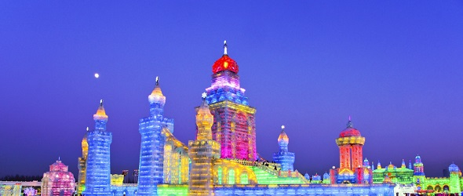

黑龙江人在过去有关东三大怪：“窗户纸糊在外，大姑娘叼着个大烟袋，养活孩子吊起来”。 [63] 黑龙江人在冬季，经常不戴帽子在室外工作，喜欢在冬天里吃冰点，喜欢冬泳。 [63] 黑龙江人性格较为豪爽、热情、幽默、说话直来直去。 春节是黑龙江人的重要节日，从腊八到正月十五，杀年猪、包饺子、贴对联、做干粮，全家围在炕桌上大碗喝酒、大口吃肉，孩子们则打爬犁、打雪仗、玩嘎啦哈、堆雪人，大人们则扭秧歌、踩高跷、看二人转。二人转已有200余年历史，它是在东北秧歌、民歌基础上，吸收借鉴了莲花落、评剧、皮影等艺术，逐渐发展起来的，流传于吉林、辽宁省，也流传于黑龙江省，并形成北路的特点：表演细腻，唱腔优美，以唱功取胜。 龙江剧是新中国建国以来在二人转基础上形成的新剧种，乡土味浓郁。
黑龙江省物产丰富，烹调原料门类齐全。人们称它“北有粮仓，南有渔场，西有畜群，东有果园，一年四季食不愁。”习惯上多食杂粮，副食品种多，喜食鱼虾和野味，口味以咸鲜为主。食法多蘸、拌，喜食渍酸菜和火锅，菜码大，分量足。 黑龙江人喜爱白酒与啤酒；饮啤酒常是论“扎”、论“瓶”、论“提”（一提为6瓶）。受俄罗斯人的影响，好友相聚，常以大红肠、扒鸡、花生米、茶叶蛋和面包佐餐，一次“小酌”往往几小时。 龙江菜以烹制山蔬，野味、肉禽和淡水鱼虾技艺见长，讲究口味的香醇、鲜嫩、爽润、咸淡相宜，以珍、鲜、清、补和绿色天然食品著称。 黑龙江菜品炖菜较多，有小鸡炖蘑菇、酸菜白肉炖粉条、得莫利炖鱼、鲶鱼炖茄子、牛肉炖柿子（源于俄罗斯的苏伯汤）、氽白肉血肠、排骨炖豆角、东北乱炖等。种类不限、搭配方式多样，有地三鲜、锅包肉、烧茄子、虎皮肘子、黄瓜拉皮等。主食有当地大米、粘豆包，炸三角、大列巴等。
冰雕是中国北方的民间艺术，它是以冰块作原料，用雕刻工具将基雕刻成立体形象，然后摆在户外，供人们观赏。冰雕艺术自20世纪60年代初在哈尔滨发展起来，产生了广泛影响。 哈尔滨的冬天，气温很低，江河结冰厚1米多，将冰开凿下来，就可雕成各种艺术品。